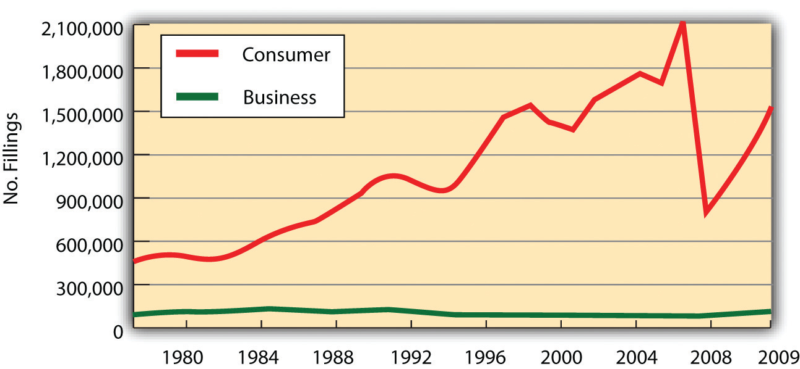

After reading this chapter, you should understand the following:
Bankruptcy law governs the rights of creditors and insolvent debtors who cannot pay their debts. In broadest terms, bankruptcy deals with the seizure of the debtor’s assets and their distribution to the debtor’s various creditors. The term derives from the Renaissance custom of Italian traders, who did their trading from benches in town marketplaces. Creditors literally “broke the bench” of a merchant who failed to pay his debts. The term banco rotta (broken bench) thus came to apply to business failures.
In the Victorian era, many people in both England and the United States viewed someone who became bankrupt as a wicked person. In part, this attitude was prompted by the law itself, which to a greater degree in England and to a lesser degree in the United States treated the insolvent debtor as a sort of felon. Until the second half of the nineteenth century, British insolvents could be imprisoned; jail for insolvent debtors was abolished earlier in the United States. And the entire administration of bankruptcy law favored the creditor, who could with a mere filing throw the financial affairs of the alleged insolvent into complete disarray.
Today a different attitude prevails. Bankruptcy is understood as an aspect of financing, a system that permits creditors to receive an equitable distribution of the bankrupt person’s assets and promises new hope to debtors facing impossible financial burdens. Without such a law, we may reasonably suppose that the level of economic activity would be far less than it is, for few would be willing to risk being personally burdened forever by crushing debt. Bankruptcy gives the honest debtor a fresh start and resolves disputes among creditors.
The US Constitution prohibits the states from impairing the “obligation of a contract.” This means that no state can directly provide a means for discharging a debtor unless the debt has been entirely paid. But the Constitution in Article I, Section 8, does give the federal government such a power by providing that Congress may enact a uniform bankruptcy law.
Congress passed bankruptcy laws in 1800, 1841, and 1867. These lasted only a few years each. In 1898, Congress enacted the Bankruptcy Act, which together with the Chandler Act amendments in 1938, lasted until 1978. In 1978, Congress passed the Bankruptcy Reform Act, and in 2005, it adopted the current law, the Bankruptcy Abuse Prevention and Consumer Protection Act (BAPCPA). This law is the subject of our chapter.
At the beginning of the twentieth century, bankruptcies averaged fewer than 20,000 per year. Even in 1935, at the height of the Great Depression, bankruptcy filings in federal court climbed only to 69,000. At the end of World War II, in 1945, they stood at 13,000. From 1950 on, the statistics show a steep increase. During the decade before the 1978 changes, bankruptcy filings in court averaged 181,000 a year—reaching a high of 254,000 in 1975. They soared to over 450,000 filings per year in the 1980s and mostly maintained that pace until just before the 2005 law took effect (see Figure 35.1 "US Bankruptcies, 1980–2009"). The 2005 act—preceded by “massive lobbying largely by banks and credit card companies”CCH Bankruptcy Reform Act Briefing, “Bankruptcy Abuse Prevention and Consumer Protection Act of 2005,” April 2005, http://www.cch.com/bankruptcy/bankruptcy_04-21.pdf.—was intended by its promoters to restore personal responsibility and integrity in the bankruptcy system. The law’s critics said it was simply a way for the credit card industry to extract more money from consumers before their debts were wiped away.
Figure 35.1 US Bankruptcies, 1980–2009
Bankruptcy Action.com, http://www.bankruptcyaction.com/USbankstats.htm, statistics from Administrative Office of the Courts.
Each federal judicial district has a US Bankruptcy Court, whose judges are appointed by US Courts of Appeal. Unless both sides agree otherwise, bankruptcy judges are to hear only bankruptcy matters (called core proceedings). Bankruptcy trustees are government lawyers appointed by the US Attorney General. They have administrative responsibilities in overseeing the proceedings.
The filing fee for a bankruptcy is about $200, depending upon the type of bankruptcy, and the typical lawyer’s fee for uncomplicated cases is about $1,200–$1,400.
The BAPCPA provides for six different kinds of bankruptcy proceedings. Each is covered by its own chapter in the act and is usually referred to by its chapter number (see Figure 35.2 "Bankruptcy Options").
Figure 35.2 Bankruptcy Options

The bankruptcy statute (as opposed to case law interpreting it) is usually referred to as the bankruptcy code. The types of bankruptcies are as follows:
The BAPCPA includes three chapters that set forth the procedures to be applied to the various proceedings. Chapter 1, “General Provisions,” establishes who is eligible for relief under the act. Chapter 3, “Case Administration,” spells out the powers of the various officials involved in the bankruptcy proceedings and establishes the methods for instituting bankruptcy cases. Chapter 5, “Creditors, the Debtor, and the Estate,” deals with the debtor’s “estate”—his or her assets. It lays down ground rules for determining which property is to be included in the estate, sets out the powers of the bankruptcy trustee to “avoid” (invalidate) transactions by which the debtor sought to remove property from the estate, orders the distribution of property to creditors, and sets forth the duties and benefits that accrue to the debtor under the act.
To illustrate how these procedural chapters (especially Chapter 3 and Chapter 5) apply, we focus on the most common proceeding: liquidation (Chapter 7). Most of the principles of bankruptcy law discussed in connection with liquidation apply to the other types of proceedings as well. However, some principles vary, and we conclude the chapter by noting special features of two other important proceedings—Chapter 13 and Chapter 11.
Bankruptcy law’s purpose is to give the honest debtor a fresh start and to resolve disputes among creditors. The most recent amendments to the law were effective in 2005. Bankruptcy law provides relief to six kinds of debtors: (1) Chapter 7, straight bankruptcy—liquidation—applies to most debtors (except banks and railroads); (2) Chapter 9 applies to municipalities; (3) Chapter 11 is business reorganization; (4) Chapter 12 applies to farmers; (5) Chapter 13 is for wage earners; and (6) Chapter 15 applies to cross-border bankruptcies. The bankruptcy statutes also have several chapters that cover procedures of bankruptcy proceedings.
Recall that the purpose of liquidation is to convert the debtor’s assets—except those exempt under the law—into cash for distribution to the creditors and thereafter to discharge the debtor from further liability. With certain exceptions, any person may voluntarily file a petition to liquidate under Chapter 7. A “person” is defined as any individual, partnership, or corporation. The exceptions are railroads and insurance companies, banks, savings and loan associations, credit unions, and the like.
For a Chapter 7 liquidation proceeding, as for bankruptcy proceedings in general, the various aspects of case administration are covered by the bankruptcy code’s Chapter 3. These include the rules governing commencement of the proceedings, the effect of the petition in bankruptcy, the first meeting of the creditors, and the duties and powers of trustees.
The bankruptcy begins with the filing of a petition in bankruptcy with the bankruptcy court.
The individual, partnership, or corporation may file a voluntary petition in bankruptcy; 99 percent of bankruptcies are voluntary petitions filed by the debtor. But involuntary bankruptcy is possible, too, under Chapter 7 or Chapter 11. To put anyone into bankruptcy involuntarily, the petitioning creditors must meet three conditions: (1) they must have claims for unsecured debt amounting to at least $13,475; (2) three creditors must join in the petition whenever twelve or more creditors have claims against the particular debtor—otherwise, one creditor may file an involuntary petition, as long as his claim is for at least $13,475; (3) there must be no bona fide dispute about the debt owing. If there is a dispute, the debtor can resist the involuntary filing, and if she wins the dispute, the creditors who pushed for the involuntary petition have to pay the associated costs. Persons owing less than $13,475, farmers, and charitable organizations cannot be forced into bankruptcy.
The petition—voluntary or otherwise—operates as a stayUpon filing the bankruptcy, an automatic injunction that halts actions by creditors to collect debts. against suits or other actions against the debtor to recover claims, enforce judgments, or create liens (but not alimony collection). In other words, once the petition is filed, the debtor is freed from worry over other proceedings affecting her finances or property. No more debt collection calls! Anyone with a claim, secured or unsecured, must seek relief in the bankruptcy court. This provision in the act can have dramatic consequences. Beset by tens of thousands of products-liability suits for damages caused by asbestos, UNR Industries and Manville Corporation, the nation’s largest asbestos producers, filed (separate) voluntary bankruptcy petitions in 1982; those filings automatically stayed all pending lawsuits.
Once a petition in bankruptcy is filed, the court issues an order of reliefThe court’s order determining the debtor’s property to be under the control of the bankruptcy court., which determines that the debtor’s property is subject to bankruptcy court control and creates the stay. The Chapter 7 case may be dismissed by the court if, after a notice and hearing, it finds that among other things (e.g., delay, nonpayment of required bankruptcy fees), the debts are primarily consumer debts and the debtor could pay them off—that’s the 2005 act’s famous “means test,” discussed in Section 35.3 "Chapter 7 Liquidation".
Assuming that the order of relief has been properly issued, the creditors must meet within a reasonable time. The debtor is obligated to appear at the meeting and submit to examination under oath. The judge does not preside and, indeed, is not even entitled to attend the meeting.
When the judge issues an order for relief, an interim trustee is appointed who is authorized initially to take control of the debtor’s assets. The trustee is required to collect the property, liquidate the debtor’s estate, and distribute the proceeds to the creditors. The trustee may sue and be sued in the name of the estate. Under every chapter except Chapter 7, the court has sole discretion to name the trustee. Under Chapter 7, the creditors may select their own trustee as long as they do it at the first meeting of creditors and follow the procedures laid down in the act.
The act empowers the trustee to use, sell, or lease the debtor’s property in the ordinary course of business or, after notice and a hearing, even if not in the ordinary course of business. In all cases, the trustee must protect any security interests in the property. As long as the court has authorized the debtor’s business to continue, the trustee may also obtain credit in the ordinary course of business. She may invest money in the estate to yield the maximum, but reasonably safe, return. Subject to the court’s approval, she may employ various professionals, such as attorneys, accountants, and appraisers, and may, with some exceptions, assume or reject executory contracts and unexpired leases that the debtor has made. The trustee also has the power to avoid many prebankruptcy transactions in order to recover property of the debtor to be included in the liquidation.
We now turn to the major matters covered in Chapter 5 of the bankruptcy act: creditors’ claims, debtors’ exemptions and discharge, and the property to be included in the estate. We begin with the rules governing proof of claims by creditors and the priority of their claims.
A claim is defined as a right to payment, whether or not it is reduced to judgment, liquidated, unliquidated, fixed, contingent, matured, unmatured, disputed, undisputed, legal, equitable, secured, or unsecured. A creditor is defined as a person or entity with a claim that arose no later than when the court issues the order for relief. These are very broad definitions, intended to give the debtor the broadest possible relief when finally discharged.
Before the trustee can distribute proceeds of the estate, unsecured creditors must file a proof of claimThe form used to file a claim by a creditor., prima facie evidence that they are owed some amount of money. They must do so within six months after the first date set for the first meeting of creditors. A creditor’s claim is disallowed, even though it is valid, if it is not filed in a timely manner. A party in interest, such as the trustee or creditor, may object to a proof of claim, in which case the court must determine whether to allow it. In the absence of objection, the claim is “deemed allowed.” The court will not allow some claims. These include unenforceable claims, claims for unmatured interest, claims that may be offset by debts the creditor owes the debtor, and unreasonable charges by an insider or an attorney. If it’s a “no asset” bankruptcy—most are—creditors are in effect told by the court not to waste their time filing proof of claim.
The bankruptcy act sets out categories of claimants and establishes priorities among them. The law is complex because it sets up different orders of priorities.
First, secured creditors get their security interests before anyone else is satisfied, because the security interest is not part of the property that the trustee is entitled to bring into the estate. This is why being a secured creditor is important (as discussed in Chapter 33 "Secured Transactions and Suretyship" and Chapter 34 "Mortgages and Nonconsensual Liens"). To the extent that secured creditors have claims in excess of their collateral, they are considered unsecured or general creditors and are lumped in with general creditors of the appropriate class.
Second, of the six classes of claimants (see Figure 35.3 "Distribution of the Estate"), the first is known as that of “priority claims.” It is subdivided into ten categories ranked in order of priority. The highest-priority class within the general class of priority claims must be paid off in full before the next class can share in a distribution from the estate, and so on. Within each class, members will share pro rata if there are not enough assets to satisfy everyone fully. The priority classes, from highest to lowest, are set out in the bankruptcy code (11 USC Section 507) as follows:
(1) Domestic support obligations (“DSO”), which are claims for support due to the spouse, former spouse, child, or child’s representative, and at a lower priority within this class are any claims by a governmental unit that has rendered support assistance to the debtor’s family obligations.
(2) Administrative expenses that are required to administer the bankruptcy case itself. Under former law, administrative expenses had the highest priority, but Congress elevated domestic support obligations above administrative expenses with the passage of the BAPCPA. Actually, though, administrative expenses have a de facto priority over domestic support obligations, because such expenses are deducted before they are paid to DSO recipients. Since trustees are paid from the bankruptcy estate, the courts have allowed de facto top priority for administrative expenses because no trustee is going to administer a bankruptcy case for nothing (and no lawyer will work for long without getting paid, either).
(3) Gap creditors. Claims made by gap creditorsCreditors giving credit, or lending money to a debtor, in the period between the filing of an involuntary bankruptcy petition and the entry of the order for relief. in an involuntary bankruptcy petition under Chapter 7 or Chapter 11 are those that arise between the filing of an involuntary bankruptcy petition and the order for relief issued by the court. These claims are given priority because otherwise creditors would not deal with the debtor, usually a business, when the business has declared bankruptcy but no trustee has been appointed and no order of relief issued.
(4) Employee wages up to $10,950 for each worker, for the 180 days previous to either the bankruptcy filing or when the business ceased operations, whichever is earlier (180-day period).
(5) Unpaid contributions to employee benefit plans during the 180-day period, but limited by what was already paid by the employer under subsection (4) above plus what was paid on behalf of the employees by the bankruptcy estate for any employment benefit plan.
(6) Any claims for grain from a grain producer or fish from a fisherman for up to $5,400 each against a storage or processing facility.
(7) Consumer layaway deposits of up to $2,425 each.
(8) Taxes owing to federal, state, and local governments for income, property, employment and excise taxes. Outside of bankruptcy, taxes usually have a higher priority than this, which is why many times creditors—not tax creditors—file an involuntary bankruptcy petition against the debtor so that they have a higher priority in bankruptcy than they would outside it.
(9) Allowed claims based on any commitment by the debtor to a federal depository institution to maintain the capital of an insured depository institution.
(10) Claims for death or personal injury from a motor vehicle or vessel that occurred while the debtor was legally intoxicated.
Third through sixth (after secured creditors and priority claimants), other claimants are attended to, but not immediately. The bankruptcy code (perhaps somewhat awkwardly) deals with who gets paid when in more than one place. Chapter 5 sets out priority claims as just noted; that order applies to all bankruptcies. Chapter 7, dealing with liquidation (as opposed to Chapter 11 and Chapter 13, wherein the debtor pays most of her debt), then lists the order of distribution. Section 726 of 11 United States Code provides: “Distribution of property of the estate. (1) First, in payment of claims of the kind specified in, and in the order specified in section 507…” (again, the priority of claims just set out). Following the order specified in the bankruptcy code, our discussion of the order of distribution is taken up in Section 35.3 "Chapter 7 Liquidation".
The act imposes certain duties on the debtor, and it exempts some property that the trustee can accumulate and distribute from the estate.
The debtor, reasonably enough, is supposed to file a list of creditors, assets, liabilities, and current income, and a statement of financial affairs. The debtor must cooperate with the trustee and be an “honest debtor” in general; the failure to abide by these duties is grounds for a denial of discharge.
The individual debtor (not including partnerships or corporations) also must show evidence that he or she attended an approved nonprofit budget and counseling agency within 180 days before the filing. The counseling may be “an individual or group briefing (including a briefing conducted by telephone or on the Internet) that outline[s] the opportunities for available credit counseling and assisted such individual in performing a related budget analysis.”11 United States Code, Section 109(h). In Section 111, the 2005 act describes who can perform this counseling, and a host of regulations and enforcement mechanisms are instituted, generally applying to persons who provide goods or services related to bankruptcy work for consumer debtors whose nonexempt assets are less than $150,000, in order to improve the professionalism of attorneys and others who work with debtors in, or contemplating, bankruptcy. A debtor who is incapacitated, disabled, or on active duty in a military zone doesn’t have to go through the counseling.
The bankruptcy act exempts certain property of the estate of an individual debtor so that he or she will not be impoverished upon discharge. Exactly what is exempt depends on state law.
Notwithstanding the Constitution’s mandate that Congress establish “uniform laws on the subject of bankruptcies,” bankruptcy law is in fact not uniform because the states persuaded Congress to allow nonuniform exemptions. The concept makes sense: what is necessary for a debtor in Maine to live a nonimpoverished postbankruptcy life might not be the same as what is necessary in southern California. The bankruptcy code describes how a person’s residence is determined for claiming state exemptions: basically, where the debtor lived for 730 days immediately before filing or where she lived for 180 days immediately preceding the 730-day period. For example, if the debtor resided in the same state, without interruption, in the two years leading up to the bankruptcy, he can use that state’s exemptions. If not, the location where he resided for a majority of the half-year preceding the initial two years will be used. The point here is to reduce “exemption shopping”—to reduce the incidences in which a person moves to a generous exemption state only to declare bankruptcy there.
Unless the state has opted out of the federal exemptions (a majority have), a debtor can choose which exemptions to claim.These are the states that allow residents to chose either federal or state exemptions (the other states mandate the use of state exemptions only): Arkansas, Connecticut, District of Columbia, Hawaii, Kentucky, Massachusetts, Michigan, Minnesota, New Hampshire, New Jersey, New Mexico, Pennsylvania, Rhode Island, Texas, Vermont, Washington, and Wisconsin. There are also some exemptions not included in the bankruptcy code: veteran’s, Social Security, unemployment, and disability benefits are outside the code, and alimony payments are also exempt under federal law. The federal exemptions can be doubled by a married couple filing together.
Here are the federal exemptions:11 United States Code, Section 522.
Homestead:
Personal Property:
Pensions:
Public Benefits:
Tools of Trade:
Alimony and Child Support:
Insurance:
In the run-up to the 2005 changes in the bankruptcy law, there was concern that some states—especially FloridaThe Florida homestead exemption is “[r]eal or personal property, including mobile or modular home and condominium, to unlimited value. Property cannot exceed: 1/2 acre in a municipality, or 160 acres elsewhere.” The 2005 act limits the state homestead exemptions, as noted.—had gone too far in giving debtors’ exemptions. The BAPCPA amended Section 522 to limit the amount of equity a debtor can exempt, even in a state with unlimited homestead exemptions, in certain circumstances. (Section 522(o) and (p) set out the law’s changes.)
As already noted, secured creditors generally have priority, even above the priority claims. That’s why banks and lending institutions almost always secure the debtor’s obligations. But despite the general rule, the debtor can avoid certain types of security interests. Liens that attach to assets that the debtor is entitled to claim as exempt can be avoided to the extent the lien impairs the value of the exemption in both Chapter 13 and Chapter 7. To be avoidable, the lien must be a judicial lien (like a judgment or a garnishment), or a nonpossessory, non-purchase-money security interest in household goods or tools of the trade.
Tax liens (which are statutory liens, not judicial liens) aren’t avoidable in Chapter 7 even if they impair exemptions; tax liens can be avoided in Chapter 13 to the extent the lien is greater than the asset’s value.
The whole point of bankruptcy, of course, is for debtors to get relief from the press of debt that they cannot reasonably pay.
Once discharged, the debtor is no longer legally liable to pay any remaining unpaid debts (except nondischargeable debts) that arose before the court issued the order of relief. The discharge operates to void any money judgments already rendered against the debtor and to bar the judgment creditor from seeking to recover the judgment.
Some debts are not dischargeable in bankruptcy. A bankruptcy discharge varies, depending on the type of bankruptcy the debtor files (Chapter 7, 11, 12, or 13). The most common nondischargeable debts listed in Section 523 include the following:
This is not an exhaustive list, and as noted in Section 35.3 "Chapter 7 Liquidation", there are some circumstances in which it is not just certain debts that aren’t dischargeable: sometimes a discharge is denied entirely.
A debtor may reaffirm a debt that was discharged. Section 524 of the bankruptcy code provides important protection to the debtor intent on doing so. No reaffirmationTo confirm again the vality of a promise that was discharged, as in bankruptcy. is binding unless the reaffirmation was made prior to the granting of the discharge; the reaffirmation agreement must contain a clear and conspicuous statement that advises the debtor that the agreement is not required by bankruptcy or nonbankruptcy law and that the agreement may be rescinded by giving notice of rescission to the holder of such claim at any time prior to discharge or within sixty days after the agreement is filed with the court, whichever is later.
A written agreement to reaffirm a debt must be filed with the bankruptcy court. The attorney for the debtor must file an affidavit certifying that the agreement represents a fully informed and voluntary agreement, that the agreement does not impose an undue hardship on the debtor or a dependent of the debtor, and that the attorney has fully advised the debtor of the legal consequences of the agreement and of a default under the agreement. Where the debtor is an individual who was not represented by an attorney during the course of negotiating the agreement, the reaffirmation agreement must be approved by the court, after disclosures to the debtor, and after the court finds that it is in the best interest of the debtor and does not cause an undue hardship on the debtor or a dependent.
When a bankruptcy petition is filed, a debtor’s estateThe intangible entity containing all the debtor’s nonexempt property and liabilities. is created consisting of all the debtor’s then-existing property interests, whether legal or equitable. In addition, the estate includes any bequests, inheritances, and certain other distributions of property that the debtor receives within the next 180 days. It also includes property recovered by the trustee under certain powers granted by the law. What is not exempt property will be distributed to the creditors.
The bankruptcy code confers on the trustee certain powers to recover property for the estate that the debtor transferred before bankruptcy.
One such power (in Section 544) is to act as a hypothetical lien creditorThe trustee acts as if he or she were a lien creditor with power to defeat any unperfected security interests.. This power is best explained by an example. Suppose Dennis Debtor purchases equipment on credit from Acme Supply Company. Acme fails to perfect its security interest, and a few weeks later Debtor files a bankruptcy petition. By virtue of the section conferring on the trustee the status of a hypothetical lien creditor, the trustee can act as though she had a lien on the equipment, with priority over Acme’s unperfected security interest. Thus the trustee can avoid Acme’s security interest, with the result that Acme would be treated as an unsecured creditor.
Another power is to avoid transactions known as voidable preferencesTransfer of assets by a debtor filing a voluntary bankruptcy petition in favor of one creditor at the expense of other secured creditors.—transactions highly favorable to particular creditors.11 United States Code, Section 547. A transfer of property is voidable if it was made (1) to a creditor or for his benefit, (2) on account of a debt owed before the transfer was made, (3) while the debtor was insolvent, (4) on or within ninety days before the filing of the petition, and (5) to enable a creditor to receive more than he would have under Chapter 7. If the creditor was an “insider”—one who had a special relationship with the debtor, such as a relative or general partner of the debtor or a corporation that the debtor controls or serves in as director or officer—then the trustee may void the transaction if it was made within one year of the filing of the petition, assuming that the debtor was insolvent at the time the transaction was made.
Some prebankruptcy transfers that seem to fall within these provisions do not. The most important exceptions are (1) transfers made for new value (the debtor buys a refrigerator for cash one week before filing a petition; this is an exchange for new value and the trustee may not void it); (2) a transfer that creates a purchase-money security interest securing new value if the secured party perfects within ten days after the debtor receives the goods; (3) payment of a debt incurred in the ordinary course of business, on ordinary business terms; (4) transfers totaling less than $600 by an individual whose debts are primarily consumer debts; (5) transfers totaling less than $5,475 by a debtor whose debts are not primarily consumer debts; and (6) transfers to the extent the transfer was a bona fide domestic support obligation.
A third power of the trustee is to avoid fraudulent transfersThe transfer of an asset for less than its fair value. made within two years before the date that the bankruptcy petition was filed.11 United States Code, Section 548. This provision contemplates various types of fraud. For example, while insolvent, the debtor might transfer property to a relative for less than it was worth, intending to recover it after discharge. This situation should be distinguished from the voidable preference just discussed, in which the debtor pays a favored creditor what he actually owes but in so doing cannot then pay other creditors.
A bankruptcy commences with the filing of a petition of bankruptcy. Creditors file proofs of claim and are entitled to certain priorities: domestic support obligations and the costs of administration are first. The debtor has an obligation to file full and truthful schedules and to attend a credit counseling session, if applicable. The debtor has a right to claim exemptions, federal or state, that leave her with assets sufficient to make a fresh start: some home equity, an automobile, and clothing and personal effects, among others. The honest debtor is discharged of many debts, but some are nondischargeable, among them taxes, debt from illegal behavior (embezzlement, drunk driving), fines, student loans, and certain consumer debt. A debtor may, after proper counseling, reaffirm debt, but only before filing. The bankruptcy trustee takes over the nonexempt property of the debtor; he may act as a hypothetical lien creditor (avoiding unperfected security interests) and avoid preferential and fraudulent transfers that unfairly diminish the property of the estate.
Except as noted, the provisions discussed up until now apply to each type of bankruptcy proceeding. The following discussion is limited to certain provisions under Chapter 7.
In addition to the duties already noted, the trustee has other duties under Chapter 7. He must sell the property for money, close up the estate “as expeditiously as is compatible with the best interests of parties in interest,” investigate the debtor’s financial affairs, examine proofs of claims, reject improper ones, oppose the discharge of the debtor where doing so is advisable in the trustee’s opinion, furnish a creditor with information about the estate and his administration (unless the court orders otherwise), file tax reports if the business continues to be operated, and make a final report and file it with the court.
Under Section 706 of the bankruptcy code, the debtor may convert a Chapter 7 case to Chapter 11, 12, or 13 at any time. The court may order a conversionIn bankruptcy, changing the chapter number filed from one to another. to Chapter 11 at any time upon request of a party in interest and after notice and hearing. And, as discussed next, a case may be converted from Chapter 7 to Chapter 13 if the debtor agrees, or be dismissed if he does not, in those cases where the debtor makes too much money to be discharged without it being an “abuse” under the 2005 act.
The court may dismiss a case for three general reasons.
The first reason is “for cause,” after notice and a hearing for cause, including (1) unreasonable delay by the debtor that prejudices creditors, (2) nonpayment of any fees required, (3) failure to file required documents and schedules.
The second reason for dismissal (or, with the debtor’s permission, conversion to Chapter 11 or 13) applies to debtors whose debt is primarily consumer debt: the court may—after notice and a hearing—dismiss a case if granting relief would be “an abuse of the provisions” of the bankruptcy code.
The third reason for dismissal is really the crux of the 2005 law: under it, the court will find that granting relief under Chapter 7 to a debtor whose debt is primarily consumer debt is “an abuse” if the debtor makes too much money. The debtor must pass a means test: If he’s poor enough, he can go Chapter 7. If he is not poor enough (or if they are not, in case of a married couple), Chapter 13—making payments to creditors—is the way to go. Here is one practitioner’s explanation of the means test:
To apply the means test, the courts will look at the debtor’s average income for the 6 months prior to filing [not the debtor’s income at the time of filing, when—say—she just lost her job] and compare it to the median income for that state. For example, the median annual income for a single wage-earner in California is $42,012. If the income is below the median, then Chapter 7 remains open as an option. If the income exceeds the median, the remaining parts of the means test will be applied.
The next step in the calculation takes monthly income less reasonable living expenses [“reasonable living expenses” are strictly calculated based on IRS standards; the figure excludes payments on the debts included in the bankruptcy], and multiplies that figure times 60. This represents the amount of income available over a 5-year period for repayment of the debt obligations.
If the income available for debt repayment over that 5-year period is $10,000 or more, then Chapter 13 will be required. In other words, anyone earning above the state median, and with at least $166.67 per month ($10,000 divided by 60) of available income, will automatically be denied Chapter 7. So for example, if the court determines that you have $200 per month income above living expenses, $200 times 60 is $12,000. Since $12,000 is above $10,000, you’re stuck with Chapter 13.
What happens if you are above the median income but do NOT have at least $166.67 per month to pay toward your debts? Then the final part of the means test is applied. If the available income is less than $100 per month, then Chapter 7 again becomes an option. If the available income is between $100 and $166.66, then it is measured against the debt as a percentage, with 25% being the benchmark.
In other words, let’s say your income is above the median, your debt is $50,000, and you only have $125 of available monthly income. We take $125 times 60 months (5 years), which equals $7,500 total. Since $7,500 is less than 25% of your $50,000 debt, Chapter 7 is still a possible option for you. If your debt was only $25,000, then your $7,500 of available income would exceed 25% of your debt and you would be required to file under Chapter 13.
To sum up, first figure out whether you are above or below the median income for your state—median income figures are available at http://www.new-bankruptcy-law-info.com. Be sure to account for your spouse’s income if you are a two-income family. Next, deduct your average monthly living expenses from your monthly income and multiply by 60. If the result is above $10,000, you’re stuck with Chapter 13. If the result is below $6,000, you may still be able to file Chapter 7. If the result is between $6,000 and $10,000, compare it to 25% of your debt. Above 25%, you’re looking at Chapter 13 for sure.Charles Phelan, “The New Bankruptcy Means Test Explained in Plain English,” Buzzle.com, http://www.buzzle.com/editorials/1-10-2006-85999.asp.
The law also requires that attorneys sign the petition (as well as the debtor); the attorney’s signature certifies that the petition is well-grounded in fact and that the attorney has no knowledge after reasonable inquiry that the schedules and calculations are incorrect. Attorneys thus have an incentive to err in favor of filing Chapter 13 instead of Chapter 7 (perhaps that was part of Congress’s purpose in this section of the law).
If there’s been a dismissalAn order terminating a case before its normal end., the debtor and creditors have the same rights and remedies as they had prior to the case being commenced—as if the case had never been filed (almost). The debtor can refile immediately, unless the court orders a 120-day penalty (for failure to appear). In most cases, a debtor can file instantly for a Chapter 13 following a Chapter 7 dismissal.
The estate includes all his or her assets or all their assets (in the case of a married couple) broadly defined. From the estate, the debtor removes property claimed exempt; the trustee may recapture some assets improperly removed from the estate (preferential and fraudulent transfers), and what’s left is the distributable estate. It is important to note that the vast majority of Chapter 7 bankruptcies are no-asset casesA bankruptcy case with no nonexempt property.—90–95 percent of them, according to one longtime bankruptcy trustee.Eugene Crane, Hearing before the Subcommittee on Commercial and Administrative Law of the Committee on the Judiciary, House of Representatives, One Hundred Tenth Congress, Second Session, Statement to the House Judiciary Sub-Committee, September 16, 2008; http://judiciary.house.gov/hearings/printers/110th/44493.PDF. That means creditors get nothing. But in those cases where there are assets, the trustee must distribute the estate to the remaining classes of claimants in this order:
Figure 35.3 Distribution of the Estate

Once the estate is distributed, the court will order the debtor discharged (except for nondischargeable debts) unless one of the following overall exceptions applies for denying dischargeThe determination that debts are no longer owing. (i.e., relief from the debt). This list is not exhaustive:
A discharge may be revoked if the debtor committed fraud during the bankruptcy proceedings, but the trustee or a creditor must apply for revocation within one year of the discharge.
Having the discharge deniedRefusal of a bankruptcy court to allow discharge, usually because the debtor has acted in bad faith. does not affect the administration of the bankruptcy case. The trustee can (and will) continue to liquidate any nonexempt assets of the debtor and pay the creditors, but the debtor still has to pay the debts left over.
As to any consequence of discharge, bankruptcy law prohibits governmental units from discriminating against a person who has gone through bankruptcy. Debtors are also protected from discrimination by private employers; for example, a private employer may not fire a debtor because of the bankruptcy. Certainly, however, the debtor’s credit rating will be affected by the bankruptcy.
A Chapter 7 bankruptcy case may be dismissed for cause or because the debtor has abused the system. The debtor is automatically considered to have abused the system if he makes too much money. With the debtor’s permission, the Chapter 7 may be converted to Chapter 11, 12, or 13. The law requires that the debtor pass a means test to qualify for Chapter 7. Assuming the debtor does qualify for Chapter 7, her nonexempt assets (if there are any) are sold by the trustee and distributed to creditors according to a priority set out in the law. A discharge may be denied, in general because the debtor has behaved dishonestly or—again—has abused the system.
Chapter 11 provides a means by which corporations, partnerships, and other businesses, including sole proprietorships, can rehabilitate themselves and continue to operate free from the burden of debts that they cannot pay.
It is simple enough to apply for the protection of the court in Chapter 11 proceeding, and for many years, large financially ailing companies have sought shelter in Chapter 11. Well-known examples include General Motors, Texaco, K-Mart, Delta Airlines, and Northwest Airlines. An increasing number of corporations have turned to Chapter 11 even though, by conventional terms, they were solvent. Doing so enables them to negotiate with creditors to reduce debt. It also may even permit courts to snuff out lawsuits that have not yet been filed. Chapters 3 and 5, discussed in Section 35.2 "Case Administration; Creditors’ Claims; Debtors’ Exemptions and Dischargeable Debts; Debtor’s Estate", apply to Chapter 11 proceedings also. Our discussion, therefore, is limited to special features of Chapter 11.
Any person eligible for discharge in Chapter 7 proceeding (plus railroads) is eligible for a Chapter 11 proceeding, except stockbrokers and commodity brokers. Individuals filing Chapter 11 must take credit counseling; businesses do not. A company may voluntarily enter Chapter 11 or may be put there involuntarily by creditors. Individuals can file Chapter 11 particularly if they have too much debt to qualify for Chapter 13 and make too much money to qualify for Chapter 7; under the 2005 act, individuals must commit future wages to creditors, just as in Chapter 13.11 United States Code, Sections 1115, 1123(a)(8), and 1129(a)(15).
Unless a trustee is appointed, the debtor will retain possession of the business and may continue to operate with its own management. The court may appoint a trustee on request of any party in interest after notice and a hearing. The appointment may be made for cause—such as dishonesty, incompetence, or gross mismanagement—or if it is otherwise in the best interests of the creditors. Frequently, the same incompetent management that got the business into bankruptcy is left running it—that’s a criticism of Chapter 11.
The court must appoint a committee of unsecured creditors as soon as practicable after issuing the order for relief. The committee must consist of creditors willing to serve who have the seven largest claims, unless the court decides to continue a committee formed before the filing, if the committee was fairly chosen and adequately represents the various claims. The committee has several duties, including these: (1) to investigate the debtor’s financial affairs, (2) to determine whether to seek appointment of a trustee or to let the business continue to operate, and (3) to consult with the debtor or trustee throughout the case.
The debtor may always file its own plan, whether in a voluntary or involuntary case. If the court leaves the debtor in possession without appointing a trustee, the debtor has the exclusive right to file a reorganization plan during the first 120 days. If it does file, it will then have another 60 days to obtain the creditors’ acceptances. Although its exclusivity expires at the end of 180 days, the court may lengthen or shorten the period for good cause. At the end of the exclusive period, the creditors’ committee, a single creditor, or a holder of equity in the debtor’s property may file a plan. If the court does appoint a trustee, any party in interest may file a plan at any time.
The Bankruptcy Reform Act specifies certain features of the plan and permits others to be included. Among other things, the plan must (1) designate classes of claims and ownership interests; (2) specify which classes or interests are impaired—a claim or ownership interest is impaired if the creditor’s legal, equitable, contractual rights are altered under the plan; (3) specify the treatment of any class of claims or interests that is impaired under the plan; (4) provide the same treatment of each claim or interests of a particular class, unless the holder of a particular claim or interest agrees to a less favorable treatment; and (5) provide adequate means for carrying out the plan. Basically, what the plan does is provide a process for rehabilitating the company’s faltering business by relieving it from repaying part of its debt and initiating reforms so that the company can try to get back on its feet.
The act requires the plan to be accepted by certain proportions of each impaired class of claims and interests. A class of claims accepts the plan if creditors representing at least two-thirds of the dollar amount of claims and more than one-half the number of allowed claims vote in favor. A class of property interests accepts the plan if creditors representing two-thirds of the dollar amount of the allowed ownership interests vote in favor. Unimpaired classes of claims and interest are deemed to have accepted the plan; it is unnecessary to solicit their acceptance.
The final act necessary under Chapter 11 is confirmation by the court. Once the court confirms the plan, the plan is binding on all creditors. The rules governing confirmation are complex, but in essence, they include the following requirements:
The debtor gets discharged when all payments under the plan are completed. A Chapter 11 bankruptcy may be converted to Chapter 7, with some restrictions, if it turns out the debtor cannot make the plan work.
Anyone with a steady income who is having difficulty paying off accumulated debts may seek the protection of a bankruptcy court in Chapter 13 proceeding (often called the wage earner’s plan). Under this chapter, the individual debtor presents a payment plan to creditors, and the court appoints a trustee. If the creditors wind up with more under the plan presented than they would receive in Chapter 7 proceeding, then the court is likely to approve it. In general, a Chapter 13 repayment plan extends the time to pay the debt and may reduce it so that the debtor need not pay it all. Typically, the debtor will pay a fixed sum monthly to the trustee, who will distribute it to the creditors. The previously discussed provisions of Chapters 3 and 5 apply also to this chapter; therefore, the discussion that follows focuses on some unique features of Chapter 13.
People seek Chapter 13 discharges instead of Chapter 7 for various reasons: they make too much money to pass the Chapter 7 means test; they are behind on their mortgage or car payments and want to make them up over time and reinstate the original agreement; they have debts that can’t be discharged in Chapter 7; they have nonexempt property they want to keep; they have codebtors on a personal debt who would be liable if the debtor went Chapter 7; they have a real desire to pay their debts but cannot do so without getting the creditors to give them some breathing room. Chapter 7 cases may always be converted to Chapter 13.
Chapter 13 is voluntary only. Anyone—sole proprietorships included—who has a regular income, unsecured debts of less than $336,000, and secured debts of less than $1,010,650 is eligible to seek its protection. The debts must be unpaid and owing at the time the debtor applies for relief. If the person has more debt than that, she will have to file Chapter 11. The debtor must attend a credit-counseling class, as in Chapter 7.
Plans are typically extensions or compositions—that is, they extend the time to pay what is owing, or they are agreements among creditors each to accept something less than the full amount owed (so that all get something). Under Chapter 13, the stretch-out period is three to five three years. The plan must provide for payments of all future income or a sufficient portion of it to the trustee. Priority creditors are entitled to be paid in full, although they may be paid later than required under the original indebtedness. As long as the plan is being carried out, the debtor may enjoin any creditors from suing to collect the original debt.
Under Section 1325 of the bankruptcy code, the court must approve the plan if it meets certain requirements. These include (1) distribution of property to unsecured creditors whose claims are allowed in an amount no less than that which they would have received had the estate been liquidated under Chapter 7; (2) acceptance by secured creditors, with some exceptions, such as when the debtor surrenders the secured property to the creditor; and (3) proposal of the plan “in good faith.” If the trustee or an unsecured creditor objects to confirmation, the plan must meet additional tests. For example, a plan will be approved if all of the debtor’s disposable income (as defined in Section 1325) over the commitment period (three to five years) will be used to make payments under the plan.
Once a debtor has made all payments called for in the plan, the court will discharge him from all remaining debts except certain long-term debts and obligations to pay alimony, maintenance, and support. Under former law, Chapter 13 was so broad that it permitted the court to discharge the debtor from many debts considered nondischargeable under Chapter 7, but 1994 amendments and the 2005 act made Chapter 13 less expansive. Debts dischargeable in Chapter 13, but not in Chapter 7, include debts for willful and malicious injury to property, debts incurred to pay nondischargeable tax obligations, and debts arising from property settlements in divorce or separation proceedings. (See Section 35.6 "Cases", In re Ryan, for a discussion of what debts are dischargeable under Chapter 13 as compared with Chapter 7.)
Although a Chapter 13 debtor generally receives a discharge only after completing all payments required by the court-approved (i.e., “confirmed”) repayment plan, there are some limited circumstances under which the debtor may request the court to grant a “hardship discharge” even though the debtor has failed to complete plan payments. Such a discharge is available only to a debtor whose failure to complete plan payments is due to circumstances beyond the debtor’s control. A Chapter 13 discharge stays on the credit record for up to ten years.
A discharge may be denied if the debtor previously went through a bankruptcy too soon before filing Chapter 13, failed to act in good faith, or—with some exceptions—failed to complete a personal financial management course.
Chapter 11—frequently referred to as “corporate reorganization”—is most often used by businesses whose value as a going concern is greater than it would be if liquidated, but, with some exceptions, anyone eligible to file Chapter 7 can file Chapter 11. The business owners, or in some cases the trustee or creditors, develop a plan to pay the firm’s debts over a three- to five-year period; the plan must be approved by creditors and the court. Chapter 13—frequently called the wage-earner’s plan—is a similar mechanism by which a person can discharge some debt and have longer to pay debts off than originally scheduled. Under Chapter 13, people can get certain relief from creditors that they cannot get in Chapter 7.
Bankruptcy is a necessary thing in a capitalist economic system. As already noted, without it, few people would be willing to take business risks, and the economy would necessarily operate at a lower level (something some people might not think so bad overall). But bankruptcy, however “enlightened” society may have become about it since Victorian days, still carries a stigma. Bankruptcy filings are public information; the lists of people and businesses who declare bankruptcy are regularly published in monthly business journals. Bankruptcy is expensive, too, and both debtors and creditors become enmeshed in significantly complex federal law. For these reasons, among others, both parties frequently determine it is in their best interest to find an alternative to bankruptcy. Here we take up briefly three common alternatives.
In other parts of this book, other nonbankruptcy creditors’ rights are discussed: under the Uniform Commercial Code (UCC), creditors have rights to reclaim goods sold and delivered but not paid for; under the UCC, too, creditors have a right to repossess personal property that has been put up as collateral for the debtor’s loan or extension of credit; and mortgagees have the right to repossess real estate without judicial assistance in many circumstances. These nonbankruptcy remedies are governed mostly by state law.
The nonbankruptcy alternatives discussed here are governed by state law also.
Under a common-law assignment for the benefit of creditorsThe debtor assigns property to a trustee to sell for creditors., the debtor transfers some or all of his assets to a trustee—usually someone appointed by the adjustment bureau of a local credit managers’ association—who sells the assets and apportions the proceeds in some agreed manner, usually pro rata, to the creditors. Of course, not every creditor need agree with such a distribution. Strictly speaking, the common-law assignment does not discharge the balance of the debt. Many state statutes attempt to address this problem either by prohibiting creditors who accept a partial payment of debt under an assignment from claiming the balance or by permitting debtors to demand a release from creditors who accept partial payment.
A compositionCreditors’ agreement to accept less than the face amount owing. is simply an agreement by creditors to accept less than the full amount of the debt and to discharge the debtor from further liability. As a contract, composition requires consideration; the mutual agreement among creditors to accept a pro rata share of the proceeds is held to be sufficient consideration to support the discharge. The essential difference between assignment and composition lies in the creditors’ agreement: an assignment implies no agreement among the creditors, whereas a composition does. Not all creditors of the particular debtor need agree to the composition for it to be valid. A creditor who does not agree to the composition remains free to attempt to collect the full sum owed; in particular, a creditor not inclined to compose the debt could attach the debtor’s assets while other creditors are bargaining over the details of the composition agreement.
One advantage of the assignment over the composition is that in the former the debtor’s assets—having been assigned—are protected from attachment by hungry creditors. Also, the assignment does not require creditors’ consent. However, an advantage to the debtor of the assignment (compared with the composition) is that in the composition creditors cannot go after the debtor for any deficiency (because they agreed not to).
A creditor may petition the court to appoint a receiver; receivershipA court action placing the debtor’s property under control of a custodian so that it can be preserved or distributed for the benefit of all creditors. is a long-established procedure in equity whereby the receiver takes over the debtor’s property under instructions from the court. The receiver may liquidate the property, continue to operate the business, or preserve the assets without operating the business until the court finally determines how to dispose of the debtor’s property.
The difficulty with most of the alternatives to bankruptcy lies in their voluntary character: a creditor who refuses to go along with an agreement to discharge the debtor can usually manage to thwart the debtor and her fellow creditors because, at the end of the day, the US Constitution forbids the states from impairing private citizens’ contractual obligations. The only final protection, therefore, is to be found in the federal bankruptcy law.
Bankruptcy is expensive and frequently convoluted. Nonbankruptcy alternatives include assignment for the benefit of creditors (the debtor’s assets are assigned to a trustee who manages or disposes of them for creditors), compositions (agreements by creditors to accept less than they are owed and to discharge the debtor from further liability), and receivership (a type of court-supervised assignment).
In re Zygarewicz
423 B.R. 909 (Bkrtcy.E.D.Cal. 2010)
MCMANUS, BANKRUPTCY JUDGE.
Angela Zygarewicz, a chapter 7 debtor and the plaintiff in this adversary proceeding, borrowed 16 government-guaranteed student [sic] loans totaling $81,429. The loans have been assigned to Educational Credit Management Corporation (“ECMC”). By September 2009, the accrual of interest on these student loans had caused the debt to balloon to more than $146,000. The debtor asks the court to declare that these student loans were discharged in bankruptcy.
The Bankruptcy Code provides financially distressed debtors with a fresh start by discharging most of their pre-petition debts.…However, under 11 U.S.C. § 523(a)(8), there is a presumption that educational loans extended by or with the aid of a governmental unit or nonprofit institution are nondischargeable unless the debtor can demonstrate that their repayment would be an undue hardship. See [Citation]. This exception to a bankruptcy discharge ensures that student loans, which are typically extended solely on the basis of the student’s future earnings potential, cannot be discharged by recent graduates who then pocket all of the future benefits derived from their education. See [Citation].
The debtor bears the burden of proving by a preponderance of the evidence that she is entitled to a discharge of the student loan. See [Citation]. That is, the debtor must prove that repayment of student loans will cause an undue hardship.
The Bankruptcy Code does not define “the undue hardship.” Courts interpreting section 523(a)(8), however, have concluded that undue hardship [and] is something more than “garden-variety hardship.” [Citation.] Only cases involving “real and substantial” hardship merit discharges. See [Citation.]
The Ninth Circuit has adopted a three-part test to guide courts in their attempts to determine whether a debtor will suffer an undue hardship is required to repay a student loan:
(Pena, citing Brunner v. N.Y. State Higher Educ. Servs. Corp., [Citation]).
Debtor must satisfy all three parts of the Brunner test before her student loans can be discharged. Failure to prove any of the three prongs will defeat a debtor’s case.
When this bankruptcy case was filed in September 2005, the debtor was a single woman and had no dependents. She is 39 years old.
Schedule I reported that the debtor was unemployed. The debtor’s responses to the Statement of Financial Affairs revealed that she had received $5,500 in income during 2005 prior to the filing of the petition. Evidence at trial indicated that after the petition was filed, the debtor found work and earned a total of $9,424 in 2005. In 2004 and 2003, she earned $13,994 and $17,339, respectively.
Despite this modest income, the debtor did not immediately file an adversary proceeding to determine the dischargeability of her student loans. It was almost three years after the entry of her chapter 7 discharge ‘on January 3, 2006 that the debtor reopened her chapter 7 case in order to pursue this adversary proceeding.’
In her complaint, the debtor admits that after she received a discharge, she found part-time work with a church and later took a full-time job as a speech therapist. During 2006, the debtor earned $20,009 and in 2007 she earned $37,314. Hence, while it is clear the debtor’s income was very modest in the time period immediately prior to her bankruptcy petition, her financial situation improved during her bankruptcy case.
The court cannot conclude based on the evidence of the debtor’s financial circumstances up to the date of the discharge, that she was unable to maintain a minimal standard of living if she was required to repay her students [sic] loans.
However, in January 2007, the debtor was injured in an automobile accident. Her injuries eventually halted the financial progress she had been making and eventually prevented her from working. She now subsists on social security disability payments.
The circumstance creating the debtor’s hardship, the automobile accident, occurred after her chapter 7 petition was filed, indeed, approximately one year after her discharge was entered. The debtor is maintaining that this post-petition, post-discharge circumstance warrants a declaration that her student loans were discharged effective from the petition date.
When must the circumstances creating a debtor’s hardship arise: before the bankruptcy case is filed; after the case if filed but prior to the entry of a discharge; or at anytime, including after the entry of a discharge?
The court concludes that the circumstances causing a chapter 7 debtor’s financial hardship must arise prior to the entry of the discharge. If the circumstances causing a debtor’s hardship arise after the entry of a discharge, those circumstances cannot form the basis of a determination that repayment of a student loan will be an undue hardship.…
[T]here is nothing in the Bankruptcy Code requiring that a complaint under section 523(a)(8) [to discharge student loans] be filed at any particular point in a bankruptcy case, whether it is filed under chapter 7 or 13. [Relevant Federal Rules of Bankruptcy Procedure] permits such dischargeability complaints to be brought at any time, including after the entry of a discharge and the closing of the bankruptcy case.…
While a debtor’s decision to file an action to determine the dischargeability of a student loan is not temporally constrained, this does not mean that a debtor’s financial hardship may arise after a discharge has been entered.
[The] Coleman [case, cited by debtor] deals with the ripeness of a dispute concerning the dischargeability of a student loan. [The Ninth Circuit held that it] is ripe for adjudication at any point during the case. The Ninth Circuit did not conclude, however, that a debtor could rely upon post-discharge circumstances to establish undue hardship. In fact, the court in Coleman made clear that the debtor could take a snapshot of the hardship warranting a discharge of a student loan any time prior to discharge. [Coleman was a Chapter 13 case.]
Here, the debtor was injured in an automobile accident on January 17, 2007, almost exactly one year after her January 3, 2006 chapter 7 discharge. Because the accident had no causal link to the misfortune prompting the debtor to seek bankruptcy relief in the first instance, the accident cannot be relied on to justify the discharge of the student loans because repayment would be an undue hardship.
To hold otherwise would mean that a bankruptcy discharge is a perpetual license to discharge student loans based on events that occur years after the bankruptcy discharge is granted. If a discharged debtor suffers later financial misfortune, that debtor must consider seeking another discharge subject to the limitations imposed by [the sections of the code stipulating how often a person can petition for bankruptcy]. In the context of a second case, the debtor could then ask that the student loan be declared dischargeable under section 523(a)(8).
In this instance, the debtor is now eligible for a discharge in a chapter 13 case. Her chapter 7 petition was filed on September 19, 2005. Section 1328(f)(1) bars a chapter 13 discharge when the debtor has received a chapter 7 discharge in a case commenced in the prior four years. She would not be eligible for a chapter 7 discharge until September 19, 2013.
This is not to say that post-discharge events are irrelevant. The second and third prongs of the Pena test require the court to consider whether the circumstances preventing a debtor from repaying a student loan are likely to persist, and whether the debtor has made good faith efforts to repay the student loan. Post-discharge events are relevant to these determinations because they require the court to look into the debtor’s financial future.
Unfortunately for the debtor, it is unnecessary to consider the second and third prongs because she cannot satisfy the first prong.
The court cites the Coleman case. That was a Chapter 13 proceeding. Here were the facts: Debtor had not yet completed her payments under her five-year repayment plan, and no discharge order had yet been entered; one year into the plan, she was laid off work. She had been trying to repay her student loans for several years, and she claimed she would suffer hardship in committing to the five-year repayment plan without any guarantee that her student loan obligations would be discharged, since she was required to commit all of her disposable income to payments under the plan and would likely be forced to pursue undue hardship issue pro se upon completion of the plan.” In Coleman, the court held that Debtor could, postfiling but predischarge—one year into the five-year plan—bring up the hardship issue.
Now, in the case here, after the auto accident, the petitioner “subsists” on Social Security disability payments, and she has almost $150,000 in debt, yet the court prohibited her from claiming a hardship discharge of student loans. Does this result really make sense? Is the court’s concern that allowing this postdischarge relief would mean “that a bankruptcy discharge is a perpetual license to discharge student loans based on events that occur years after the bankruptcy discharge is granted” well founded? Suppose it is scheduled to take thirty years to pay off student loans; in year 4, the student-borrower, now Debtor, declares Chapter 7 bankruptcy, student loans not being discharged; in year 6, the person is rendered disabled. What public policy is offended if the person is allowed to “reopen” the bankruptcy and use the postbankruptcy event as a basis for claiming a hardship discharge of student loans?
In re Johns-Manville Corp.
36 B.R. 727 (Bkrtcy. N.Y. 1984)
Lifland, Bankruptcy Judge.
Whether an industrial enterprise in the United States is highly successful is often gauged by its “membership” in what has come to be known as the “Fortune 500”. Having attained this measure of financial achievement, Johns-Manville Corp. and its affiliated companies (collectively referred to as “Manville”) were deemed a paradigm of success in corporate America by the financial community. Thus, Manville’s filing for protection under Chapter 11 of Title 11 of the United States Code (“the Code or the Bankruptcy Code”) on August 26, 1982 (“the filing date”) was greeted with great surprise and consternation on the part of some of its creditors and other corporations that were being sued along with Manville for injuries caused by asbestos exposure. As discussed at length herein, Manville submits that the sole factor necessitating its filing is the mammoth problem of uncontrolled proliferation of asbestos health suits brought against it because of its substantial use for many years of products containing asbestos which injured those who came into contact with the dust of this lethal substance. According to Manville, this current problem of approximately 16,000 lawsuits pending as of the filing date is compounded by the crushing economic burden to be suffered by Manville over the next 20–30 years by the filing of an even more staggering number of suits by those who had been exposed but who will not manifest the asbestos-related diseases until some time during this future period (“the future asbestos claimants”). Indeed, approximately 6,000 asbestos health claims are estimated to have arisen in only the first 16 months since the filing date. This burden is further compounded by the insurance industry’s general disavowal of liability to Manville on policies written for this very purpose.
It is the propriety of the filing by Manville which is the subject of the instant decision. Four separate motions to dismiss the petition pursuant to Section 1112(b) of the Code have been lodged before this Court.…
Preliminarily, it must be stated that there is no question that Manville is eligible to be a debtor under the Code’s statutory requirements. Moreover, it should also be noted that neither Section 109 nor any other provision relating to voluntary petitions by companies contains any insolvency requirement.…Accordingly, it is abundantly clear that Manville has met all of the threshold eligibility requirements for filing a voluntary petition under the Code.…
A “principal goal” of the Bankruptcy Code is to provide “open access” to the “bankruptcy process.” [Citation.] The rationale behind this “open access” policy is to provide access to bankruptcy relief which is as “open” as “access to the credit economy.” Thus, Congress intended that “there should be no legal barrier to voluntary petitions.” Another major goal of the Code, that of “rehabilitation of debtors,” requires that relief for debtors must be “timely.” Congress declared that it is essential to both the “open access” and “rehabilitation” goals that
[i]nitiating relief should not be a death knell. The process should encourage resort to it, by debtors and creditors, that cuts short the dissipation of assets and the accumulation of debts. Belated commencement of a case may kill an opportunity for reorganization or arrangement.
Accordingly, the drafters of the Code envisioned that a financially beleaguered debtor with real debt and real creditors should not be required to wait until the economic situation is beyond repair in order to file a reorganization petition. The “Congressional purpose” in enacting the Code was to encourage resort to the bankruptcy process. This philosophy not only comports with the elimination of an insolvency requirement, but also is a corollary of the key aim of Chapter 11 of the Code, that of avoidance of liquidation. The drafters of the Code announced this goal, declaring that reorganization is more efficient than liquidation because “assets that are used for production in the industry for which they were designed are more valuable than those same assets sold for scrap.” [Citation.] Moreover, reorganization also fosters the goals of preservation of jobs in the threatened entity. [Citation.]
In the instant case, not only would liquidation be wasteful and inefficient in destroying the utility of valuable assets of the companies as well as jobs, but, more importantly, liquidation would preclude just compensation of some present asbestos victims and all future asbestos claimants. This unassailable reality represents all the more reason for this Court to adhere to this basic potential liquidation avoidance aim of Chapter 11 and deny the motions to dismiss. Manville must not be required to wait until its economic picture has deteriorated beyond salvation to file for reorganization.
Clearly, none of the justifications for declaring an abuse of the jurisdiction of the bankruptcy court announced by these courts [in various cases cited] are present in the Manville case. In Manville, it is undeniable that there has been no sham or hoax perpetrated on the Court in that Manville is a real business with real creditors in pressing need of economic reorganization. Indeed, the Asbestos Committee has belied its own contention that Manville has no debt and no real creditors by quantifying a benchmark settlement demand approaching one billion dollars for compensation of approximately 15,500 pre-petition asbestos claimants, during the course of negotiations pitched toward achieving a consensual plan. This huge asserted liability does not even take into account the estimated 6,000 new asbestos health claims which have arisen in only the first 16 months since the filing date. The number of post-filing claims increases each day as “future claims back into the present.” …
In short, Manville’s filing did not in the appropriate sense abuse the jurisdiction of this Court and it is indeed, like the debtor in [Citation], a “once viable business supporting employees and unsecured creditors [that] has more recently been burdened with judgments [and suits] that threaten to put it out of existence.” Thus, its petition must be sustained.…
In sum, Manville is a financially besieged enterprise in desperate need of reorganization of its crushing real debt, both present and future. The reorganization provisions of the Code were drafted with the aim of liquidation avoidance by great access to Chapter 11. Accordingly, Manville’s filing does not abuse the jurisdictional integrity of this Court, but rather presents the same kinds of reasons that were present in [Citation], for awaiting the determination of Manville’s good faith until it is considered…as a prerequisite to confirmation or as a part of the cadre of motions before me which are scheduled to be heard subsequently.
[A]ll four of the motions to dismiss the Manville petition are denied in their entirety.
In re Ryan
389 B.R. 710 9th Cir. BAP, (Idaho, 2008)
On July 13, 1995, Ryan was convicted of possession of an unregistered firearm under 26 U.S.C. § 5861(d) in the United States District Court for the District of Alaska. Ryan was sentenced to fifty-seven months in prison followed by three years of supervised release. In addition, Ryan was ordered to pay a fine of $7,500…, costs of prosecution in the amount of $83,420, and a special assessment of $50.00. Ryan served his sentence. He also paid the $7,500 fine. The district court, following an appellate mandate, ultimately eliminated the restitution obligation.
On April 25, 2003, Ryan filed a petition for bankruptcy relief under chapter 7 in the District of Idaho. He received his chapter 7 discharge on August 11, 2003. Shortly thereafter, Ryan filed a case under chapter 13, listing as his only obligation the amount of unpaid costs of prosecution owed to the United States (“Government”).…
Ryan completed payments under the plan, and an “Order of Discharge” was entered on October 5, 2006. The chapter 13 trustee’s final report reflected that the Government received $2,774.89 from payments made by Ryan under his plan, but a balance of $77,088.34 on the Government’s costs of prosecution claim remained unpaid. Ryan then renewed his request for determination of dischargeability. The bankruptcy court held that the unpaid portion of the Government’s claim for costs of prosecution was excepted from discharge by § 1328(a)(3). Ryan appealed.
Section 1328(a)(3) provides an exception to discharge in chapter 13 for “restitution, or a criminal fine.” It states, in pertinent part:
[A]s soon as practicable after the completion by the debtor of all payments under the plan, the court shall grant the debtor a discharge of all debts provided for by the plan or disallowed under section 502 of this title except any debt…
(3) for restitution, or a criminal fine, included in a sentence on the debtor’s conviction of a crime [.] [emphasis added].
The essential question, then, is whether these costs of prosecution constitute a “criminal fine.”
Statutory interpretation begins with a review of the particular language used by Congress in the relevant version of the law. [Citation.]
The term “criminal fine” is not defined in [Chapter 13] or anywhere else in the Bankruptcy Code. However, its use in § 1328(a)(3) implicates two important policies embedded in the Bankruptcy Code. First, in light of the objective to provide a fresh start for debtors overburdened by debts that they cannot pay, exceptions to discharge are interpreted strictly against objecting creditors and in favor of debtors. See, e.g. [Citations]. In chapter 13, this principle is particularly important because Congress adopted the liberal “superdischarge” provisions of § 1328 as an incentive to debtors to commit to a plan to pay their creditors all of their disposable income over a period of years rather than simply discharging their debts in a chapter 7 liquidation.
“[T]he dischargeability of debts in chapter 13 that are not dischargeable in chapter 7 represents a policy judgment that [it] is preferable for debtors to attempt to pay such debts to the best of their abilities over three years rather than for those debtors to have those debts hanging over their heads indefinitely, perhaps for the rest of their lives.” [Citations.]
A second, countervailing policy consideration is a historic deference, both in the Bankruptcy Code and in the administration of prior bankruptcy law, to excepting criminal sanctions from discharge in bankruptcy. Application of this policy is consistent with a general recognition that, “[t]he principal purpose of the Bankruptcy Code is to grant a ‘fresh start’ to the ‘honest but unfortunate debtor.’” [Citation] (emphasis added [in original]).
The legislative history is clear that [in its 1994 amendments to the bankruptcy law] Congress intended to overrule the result in [of a 1990 Supreme Court case so that]:…“[N]o debtor with criminal restitution obligations will be able to discharge them through any bankruptcy proceeding.”…
The imposition on a defendant of the costs of a special prosecutor is different from ordering a defendant to pay criminal fines. Costs are paid to the entity incurring the costs; criminal fines are generally paid to a special fund for victims’ compensation and assistance in the U.S. Treasury.…
To honor the principle that exceptions to discharge are to be construed narrowly in favor of debtors, particularly in chapter 13, where a broad discharge was provided by Congress as an incentive for debtors to opt for relief under that chapter rather than under chapter 7, it is not appropriate to expand the scope of the [Chapter 13] exception beyond the terms of the statute. Congress could have adopted an exception to discharge in chapter 13 that mirrored [the one in Chapter 7]. It did not do so. In contrast, under [the 2005] BAPCPA, when Congress wanted to limit the chapter 13 “superdischarge,” it incorporated exceptions to discharge from [Chapter 7] wholesale.…
As a bottom line matter, Ryan served his time and paid in full the criminal fine that was imposed as part of his sentence for conviction of possession of an unregistered firearm. The restitution obligation that was included as part of his sentence was voided. Ryan paid the Government a total of $6,331.66 to be applied to the costs of prosecution awarded as part of his criminal judgment, including $2,774.89 paid under his chapter 13 plan, leaving a balance of $77,088.34. We determine that the unpaid balance of the costs of prosecution award was covered by Ryan’s chapter 13 discharge.
Based on the foregoing analysis, we conclude that the exception to discharge included in [Chapter 13] for “restitution, or a criminal fine, included in a sentence on the debtor’s conviction of a crime” does not cover costs of prosecution included in such a sentence, and we REVERSE.
The Constitution gives Congress the power to legislate on bankruptcy. The current law is the Bankruptcy Abuse Prevention and Consumer Protection Act of 2005, which provides for six types of proceedings: (1) liquidation, Chapter 7; (2) adjustment of debts of a municipality, Chapter 9; (3) reorganization, Chapter 11; (4) family farmers with regular income, Chapter 12; (5) individuals with regular income, Chapter 13; and (6) cross-border bankruptcies, Chapter 15.
With some exceptions, any individual, partnership, or corporation seeking liquidation may file a voluntary petition in bankruptcy. An involuntary petition is also possible; creditors petitioning for that must meet certain criteria.
A petition operates as a stay against the debtor for lawsuits to recover claims or enforce judgments or liens. A judge will issue an order of relief and appoint a trustee, who takes over the debtor’s property and preserves security interests. To recover monies owed, creditors must file proof of claims. The trustee has certain powers to recover property for the estate that the debtor transferred before bankruptcy. These include the power to act as a hypothetical lien creditor, to avoid fraudulent transfers and voidable preferences.
The bankruptcy act sets out categories of claimants and establishes priority among them. After secured parties take their security, the priorities are (1) domestic support obligations, (2) administrative expenses, (3) gap creditor claims, (4) employees’ wages, salaries, commissions, (5) contributions to employee benefit plans, (6) grain or fish producers’ claims against a storage facility, (7) consumer deposits, (8) taxes owed to governments, (9) allowed claims for personal injury or death resulting from debtor’s driving or operating a vessel while intoxicated. After these priority claims are paid, the trustee must distribute the estate in this order: (a) unsecured creditors who filed timely, (b) unsecured creditors who filed late, (c) persons claiming fines and the like, (d) all other creditors, (e) the debtor. Most bankruptcies are no-asset, so creditors get nothing.
Under Chapter 7’s 2005 amendments, debtors must pass a means test to be eligible for relief; if they make too much money, they must file Chapter 13.
Certain property is exempt from the estate of an individual debtor. States may opt out of the federal list of exemptions and substitute their own; most have.
Once discharged, the debtor is no longer legally liable for most debts. However, some debts are not dischargeable, and bad faith by the debtor may preclude discharge. Under some circumstances, a debtor may reaffirm a discharged debt. A Chapter 7 case may be converted to Chapter 11 or 13 voluntarily, or to Chapter 11 involuntarily.
Chapter 11 provides for reorganization. Any person eligible for discharge in Chapter 7 is eligible for Chapter 11, except stockbrokers and commodity brokers; those who have too much debt to file Chapter 13 and surpass the means test for Chapter 7 file Chapter 11. Under Chapter 11, the debtor retains possession of the business and may continue to operate it with its own management unless the court appoints a trustee. The court may do so either for cause or if it is in the best interests of the creditors. The court must appoint a committee of unsecured creditors, who remain active throughout the proceeding. The debtor may file its own reorganization plan and has the exclusive right to do so within 120 days if it remains in possession. The plan must be accepted by certain proportions of each impaired class of claims and interests. It is binding on all creditors, and the debtor is discharged from all debts once the court confirms the plan.
Chapter 13 is for any individual with regular income who has difficulty paying debts; it is voluntary only; the debtor must get credit counseling. The debtor presents a payment plan to creditors, and the court appoints a trustee. The plan extends the time to pay and may reduce the size of the debt. If the creditors wind up with more in this proceeding than they would have in Chapter 7, the court is likely to approve the plan. The court may approve a stretch-out of five years. Some debts not dischargeable under Chapter 7 may be under Chapter 13.
Alternatives to bankruptcy are (1) composition (agreement by creditors to accept less than the face amount of the debt), (2) assignment for benefit of creditors (transfer of debtor’s property to a trustee, who uses it to pay debts), and (3) receivership (a disinterested person is appointed by the court to preserve assets and distribute them at the court’s direction). Because these are voluntary procedures, they are ineffective if all parties do not agree to them.
Alternatives to bankruptcy include
A composition is
The highest-priority class set out by the 2005 act is for
Darlene Debtor did the following within ninety days of filing for bankruptcy. Which could be set aside as a preferential payment?
Donald Debtor sold his 1957 Chevrolet to his brother for one-fifth its value sixty days before filing for bankruptcy. The trustee wishes to avoid the transaction on the basis that it was
Acme Co. filed for bankruptcy with the following debts; which is their correct priority from highest to lowest?
i. wages of $15,000 owed to employees
ii. unpaid federal taxes
iii. balance owed to a creditor who claimed its security with a $5,000 deficiency owing